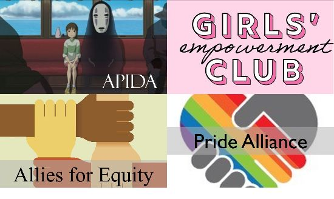

This was the group of girls my first year ever joining GEC! The leaders and founders were Megan D and Dana H who were bot in the class of 2021. Most of the group consisted of the juniors and my fellow freshman friends. For a bonding day, we all went and worked out at the Militia Method Workout place to do a team workout. This is one of my core memories with this group of girls.
With Megan and Dana as our leaders, one of my favorite events we did was the Bake Sale Book Drive. We partnered with the Rwanda Girls Initiave to hold a fundraiser during lunch where EPS students would trade in thier used books in return for a dessert made by the members in GEC. The books would be shipped to Rwanda for the girls to use at school and for fun. It had an amazing turnout as we filled 2 cars full of boxes of books. Everyone was super engaged and had a ton of fun!
This year we want to partner up with One Love to host workshops for our club members and the rest of the EPS community. We plan to hold a "healthy relationships" workshop to educate and inform what it means to be in a healthy relationship. It is very important that in this time of our lives that we learn and understand all the information that comes with. I plan to get certified with the One Love organization to speak on the matter.

We also want to parter and collab with fellow EPS clubs. Since clubs period has all the clubs run at the same time, we are forced to choose one club and stick with it. There are so many other wonderful clubs out there! We hopeto work with other clubs and combine for discussions, panels, and workshops. Since we are a female empowering club, we can mix well with clubs such as Hack Club (to promote women in coding), Business club (to focus on women in the business world), and Ms. Eng's Student Athlete Leadership Club (to empower female athletes and get them the support we deserve).